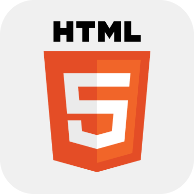
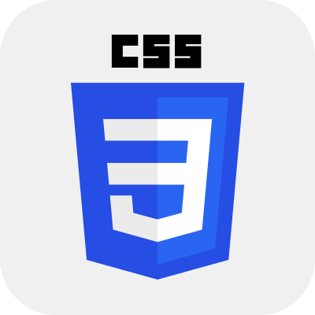
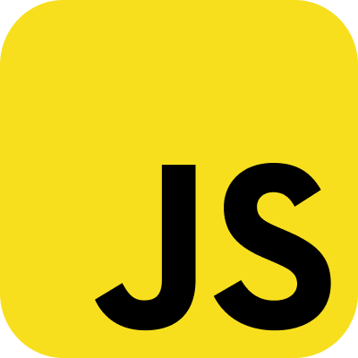
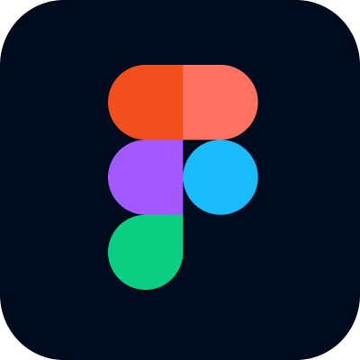
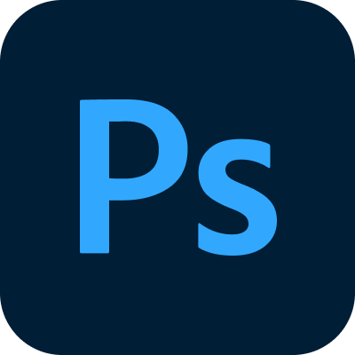

SOMOK Traditional Cosmetics Website Design
소목 코스메틱 웹사이트 디자인
2025 March 21 ~ April 10
소목(SOMOK)은 팀원 각자의 이니셜을 따서 만든 가상의 뷰티
코스메틱 브랜드입니다. 아름다운 한국의 '전통성'에서 영감을
받은 '소목'은 고유의 정체성과 더불어 독자적인 로고와 스토리를
가지고 있습니다. 팀원 각자 저마다의 감각이 돋보이는
상세페이지를 제작하여 실용과 미감을 모두 놓치지 않았습니다.
팀 프로젝트 (5인) – 20% 기여
20%
Used Skills





Tour Les Jours Website Redesign
뚜레쥬르 웹사이트 리디자인
2025 Feburary 12 ~ March 14
'뚜레쥬르' 공식 웹사이트를 리디자인하고 코딩으로 구현한 웹
프로젝트입니다. 기존의 모바일 중심의 가로 배치, 과도한 배너
사용, 부족한 여백 활용, 전체적으로 촌스러운 색감 등의 단점을
보안하였습니다. 팀원들의 만장일치로 저의 피그마 시안이 최종
시안으로 채택되었고, 트렌디한 감각과 역동적인 디자인의 웹을
개발하였습니다.